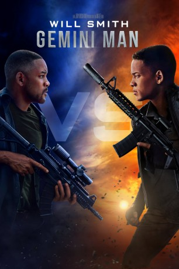

#12272 Gemini Man
 
 IMDB-Wertung: 5.7 / 10
IMDB-Wertung: 5.7 / 10  Tomatometer: 26
Tomatometer: 26  Metascore: 38
Metascore: 38 
Henry Brogan ist ein Weltklasse-Attentäter, der sich in den Ruhestand begeben will. Da setzt sein ehemaliger Vorgesetzter Clay Verris plötzlich einen gefährlichen Assassinen auf ihn an, der sich als Henrys eigener, im Geheimen erzeugter und vor allem viel jüngerer Klon (ebenfalls Smith, aber aus dem Computer) entpuppt. Es entbrennt ein ebenbürtiges Duell zwischen dem menschlichen Original und seiner Kopie, in dem beide immer den nächsten Schritt des jeweils anderen zu kennen scheinen. Brogan wird dabei von der Regierungsagentin Danny Zakarweski und seinem Kollegen Baron beim Überleben unterstützt, während sein Klon in eine Identitätskrise stürzt. Werden die Profi-Killer den tödlichen Teufelskreis durchbrechen können, den der undurchsichtige Verris in Gang gesetzt hat?
Jahr: 2019
Dauer: 117 Minuten
FSK: 12
Land: USA Studio: Paramount PicturesTonspuren: - , - , - ,
Untertitel: Deutsch, Englisch,
Auflösung: 1080p (1920x1040) Größe: 8048 MB
Genre: Action, Thriller, Drama, Sci-Fi
Regisseur:  Ang Lee
Ang Lee
Drehbuch: David Benioff, Billy Ray, Darren Lemke
Soundtrack: Lorne Balfe
Darsteller:
 Will Smith als Henry Brogan / Junior
Will Smith als Henry Brogan / Junior Mary Elizabeth Winstead als Danny Zakarweski
Mary Elizabeth Winstead als Danny Zakarweski Clive Owen als Clay Verris
Clive Owen als Clay Verris Benedict Wong als Baron
Benedict Wong als Baron Douglas Hodge als Jack Willis
Douglas Hodge als Jack Willis Ralph Brown als Del Patterson
Ralph Brown als Del Patterson Linda Emond als Janet Lassiter
Linda Emond als Janet Lassiter Ilia Volok als Yuri Kovacs
Ilia Volok als Yuri Kovacs- E.J. Bonilla als Marino
- Victor Hugo als Junior On-Set Reference
- David Shae als Bicycle Messenger
- Theodora Miranne als Jack's Girlfriend
- Fernanda Dorogi als Mother on Train
- Alexandra Szucs als Lab Technician
 Tim Connolly als Key Shack Agent
Tim Connolly als Key Shack Agent- Daniel Salyers als Patterson's Son
- Jordan Sherley als High School Girl
- Tony Scott als High School Principal
- Daniel Annone als Barista #2 (uncredited)
- Justin James Boykin als Connor (uncredited)
- William Caraballo als College student (uncredited)
- Christopher T. Elliott als John (uncredited)
 Björn Freiberg als Training Officer (uncredited)
Björn Freiberg als Training Officer (uncredited)- Chris Goad als DIA Agent (uncredited)
- Samantha Goldman als College Student (uncredited)
- Shiquita James als Pedestrian (uncredited)
- Frankie Justin als College Student (uncredited)
- Samantha Kudler als College Student (uncredited)
- Zach Mellado als College Kid (uncredited)
- Hannah Pniewski als Barista #1 (uncredited)
- Carl Salonen als Budapest Bathhouse Patron (uncredited)
 Kenny Sheard als Scuba Killer #1 (uncredited)
Kenny Sheard als Scuba Killer #1 (uncredited)- Saskia Slaaf als Flemish Train Announcer (uncredited)
- Dillon John Swanson als College Student (uncredited)
- Adrian Valle Torres als Junior's Friend (uncredited)
- Karis Wymbs als School Kid (uncredited)
- Diego Adonye als Henry's Dad
- Lilla Banak als Henry's Mom
- Igor Szasz als Valery Dormov
- Alexa GyÖrgy als Young Girl on Train
- Jeff J.J. Authors als Man at Marina
- Olivia Bailey als Coffee House Hipster (uncredited)
- Jenson Bland als High School Student (uncredited)
 Marc Demeter als Agent Demeter (uncredited)
Marc Demeter als Agent Demeter (uncredited)- Dawit Gulilat als Pedestrian (uncredited)
- Thanh-Huy Phan als Tourist (uncredited)
- Brianna Robinson als College Student (uncredited)
- Ferenc Iván Szabó als Training officer (uncredited)
- Ashton Tatum als Cop (uncredited)
- Balázs Veres als Hungarian Student (uncredited)
Datei: X:\2019(G-M)\Gemini Man (2019, FSK12, 1920x1040).mkv seit 12.01.2020
Festplatte: HD 2018(G-Z)-2019(A-Z)
 Es gibt insgesamt 47 Filme in der Gruppe '2019(G-M)'
Es gibt insgesamt 47 Filme in der Gruppe '2019(G-M)'